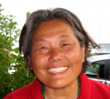

Please note: the AAS Obituaries are temporarily being hosted on this website while their full content is being ingested into the PubPub publishing platform newly adopted by the Bulletin of the American Astronomical Society. When the migration is complete, your existing links will take you to the final, migrated content. Contact peter.williams@aas.org with any questions.
Sun Hong Rhie (1955-2013)
Sun Hong Rhie, a former research professor of physics at the University of Notre Dame, died of complications from a peptic ulcer at home in Granger, Indiana, on 19 October 2013.
Rhie was born to Soonyim Kim and Shinwoo Lee (her mother and father) on 1 March 1955 near Chiri Mountain in Gurae, South Korea, where her father served as the Principal of Gurae High School. Rhie grew up in Gwangju, where she was a popular and successful student. She had the highest score among women in South Korea on her college pre-entrance exam; she attended Seoul National University, where she received her bachelor's degree in physics in 1978. Rhie moved to the US for her graduate work and received a master’s degree in physics from UCLA in 1982. She then transferred to Stanford University, where she met and married David Bennett, a fellow graduate student. In 1988 Rhie received her PhD with a thesis on heavy fourth-generation neutrinos, supervised by Fred Gilman, and gave birth to her daughter, Clara Bennett, later that year.
After a short break, Rhie returned to research in 1990 with postdoc positions at the University of California, Berkeley, and Lawrence Livermore National Laboratory. At first she focused on the possibility that global topological defects might provide the seeds for galaxy formation. She and Bennett were the first to calculate the full-sky microwave background anisotropies predicted by topological defects and show that these models were not consistent with observations.
Rhie’s most influential work was in gravitational lensing. When the first gravitational microlensing event, MACHO-LMC-1, was discovered in 1993, Rhie noticed that the light curve had a feature that could be explained by a planetary companion. That spurred her work on multiple-lens systems. In 1995 NASA sponsored the Exploration of Neighboring Planetary Systems (ExNPS) studies, which considered the possibility of using a gravitational microlensing survey to determine the prevalence of Earth-mass planets. But it was not known if microlensing was actually sensitive to Earth-mass planets, so ExNPS study leaders put out an urgent request to answer that question. Rhie and Bennett were the only ones to solve the problem. In doing so, they developed the first planetary microlensing light-curve code, including finite source effects, and enabled the modeling of all types of planetary microlensing light curves.
The pair later realized that a space-based microlensing survey was the only way to detect Earth-mass planets over a wide range of orbital radii, from the habitable zone to infinity. Their concept for a space-based microlensing survey was first proposed to NASA in 2000 and later selected as a part of NASA’s Wide Field Infrared Survey Telescope (WFIRST), which was the top-ranked large space mission in the 2010 decadal survey of astronomy and astrophysics. Without Rhie’s work, it is unlikely that this space-based microlensing program would be a part of the WFIRST mission concept.
Many of Rhie’s most important papers involved the theory of lensing by systems of multiple point masses. She was the first to present the triple lens equations that are used for modeling multiple planet and multiple star-plus-planet events. Her most noteworthy work was her 2003 demonstration, through a beautiful perturbation argument, that a lens system of N point masses can have 5(N − 1) images for N ≥ 2. That followed her 2001 conjecture that the maximum number of images for an N point mass lens is 5(N − 1). This problem is equivalent to a pure analytical question in mathematics concerning the number of zeros of a certain harmonic rational function of degree N.
Mathematicians Dmitry Khavinson and Genevra Neumann, while working on this same mathematics problem, proved that the maximum number of images cannot exceed 5(N − 1). They were unsure if 5(N − 1) images could be achieved until another mathematician, Jeff Rabin, referred them to Rhie's work. Their result was considered so noteworthy in pure mathematics, it warranted a 2008 review article in the Notices of the American Mathematical Society and an accompanying press release.
Rhie was enthusiastic about exploring the natural world, particularly with Clara. When her daughter was five, Rhie made a family hike in Yosemite National Park so much fun by singing and skipping along the trail that Clara managed an eight-mile hike without complaint. And no visit to Hawaii Volcanoes National Park was complete without Rhie scooping a dollop of lava from an active flow.
In her later years, Rhie was diagnosed with schizophrenia. The disease limited her ability to continue the research she loved and to tolerate the refereeing of her papers; as a result, much of her work is published only at arXiv.org. The side effects from her treatments interfered with her intellectual work, and she voiced much frustration with the lack of scientific and medical understanding of the devastating disorder.
A special session of the 18th International Conference on Gravitational Microlensing, held in Santa Barbara, CA, in January 2014 was devoted to Rhie’s work. The presentations are available at http://www.nd.edu/SHR_ML18.
Rhie is survived by her daughter and husband, as well as her mother, a sister, Insook Lee, and three brothers, Sanghwa Lee, Sangyong Lee and Sangduk Lee.
Obituary written by: David P. Bennett (University of Notre Dame)
BAAS Citation: BAAS, 2014, 46, 008